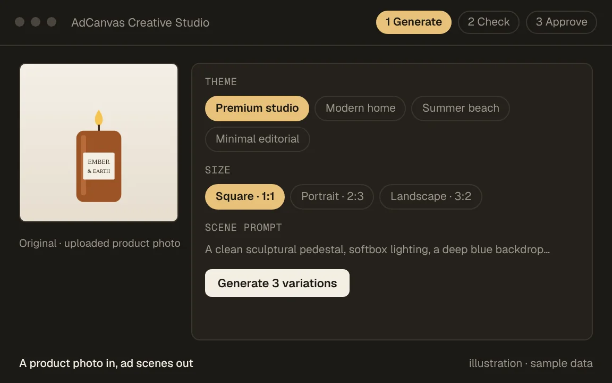
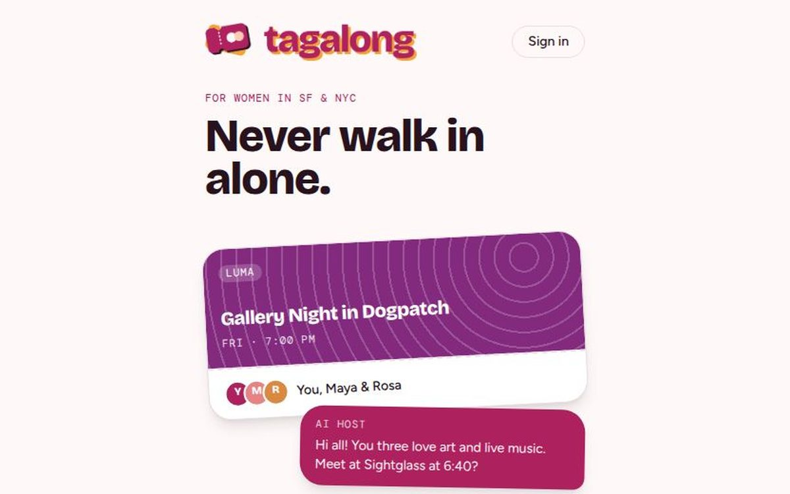

Basanti Nashine
Head of Product at Orcana.AI,
previously Principal Product Manager-Technical (L7) at Amazon
I build AI agents and platforms for advertising, personalization, and analytics.
At Amazon, I led a generative AI ad platform that improved CTR by 11.75% (the biggest improvement any one product had driven).
I started my career as a data scientist, and it still shapes how I lead product: make the customer problem clear, test the assumptions, and decide up front how we’ll know the product works.
I really enjoy working with people who see a problem differently. The best conversations are the ones where we can stay curious, challenge assumptions, and keep the customer in view. I make space for those conversations, bring clarity when things get fuzzy, and help the team turn what we learn into something useful.
I studied engineering at BITS Pilani and earned my MBA at Kellogg. I’ve worked across the U.S., India, and Japan, and I’m based in the Bay Area.
Outside work, I love traveling and exploring architecture. Understanding a place means looking closely at how people live. I bring that same curiosity to understanding the people I build products for.
To see my professional projects, go to Work. To see my personal projects, go to Projects and Agents.
Selected work
- Search ads written for every keywordAmazon+11.75% click-throughUS A/B test
- Remembering why a shopper cameAmazon$430M incremental revenue+16% conversion, A/B tests
- Agents that do the busywork for advertisersAmazon+34% setup completionframework adopted by 22 teams
- Marketing answers in hours, not monthsOrcana.AI12 weeks → 2 hoursanalysis time; live with four enterprise customers
- What should a marketer do next?Orcana.AI2× revenue liftvs. rule-based systems, in a pilot
Personal projects
-

-

-

-


Agents
- Threads Agentagent
Drafts Threads posts and replies in my voice; nothing posts until I approve it.
- Decision Logagent
Answers “why did we decide this?” from meeting notes, quoting its sources.
- Eval Agentagent
Turns an agent’s repo into a tested eval, with a plain-language plan you approve first.
Background
- Orcana.AI · Head of Product
- Amazon · Principal PM-T, before that Senior PM-T
- Kellogg School of Management · MBA
- ZS Associates · Data scientist, then consultant
- BITS Pilani · B.E. (Honors), Electronics and Instrumentation
Get in touch
If you’re building AI agents, evaluation platforms, or the future of marketing and advertising, I’d love to connect.
The best way to reach me is on LinkedIn.